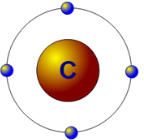
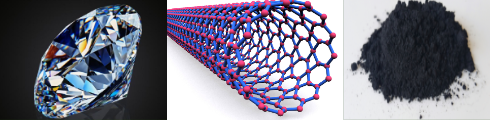
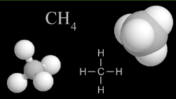
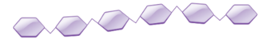
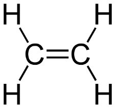
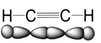
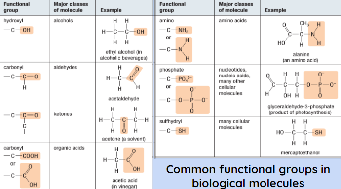
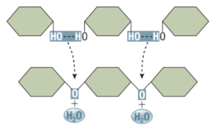
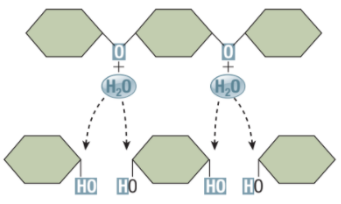

Callout
THE CARBON CHEMISTRY OF LIFE

As a result, carbon is able to form such substances as multi-ringed molecules, diamonds, and nanotubes.

Callout
CARBON CHAINS: The Backbone of Biochemistry

Carbon rings may contain an oxygen atom at one corner and can be joined into a chain.
Callout




Ionic or Strongly Polar
Callout
DEHYDRATION AND HYDROLYSIS REACTION

